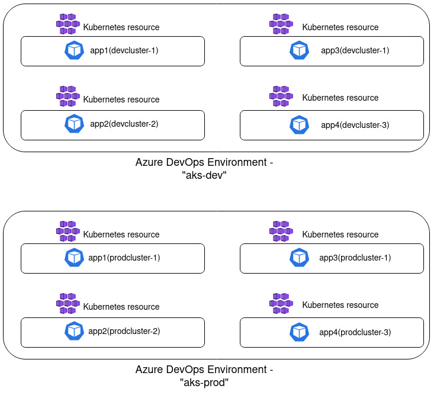
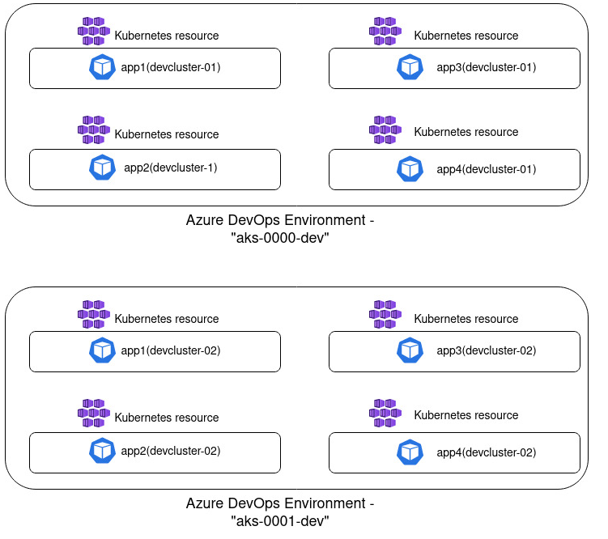
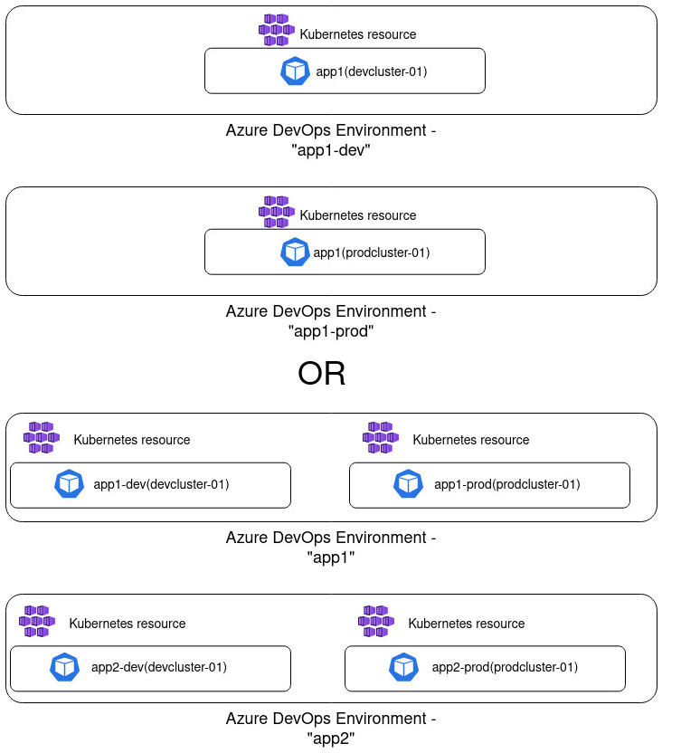

Continuous Delivery to AKS With Azure DevOps Environments - Part 1
In the first part of this blog series I would like to talk about Azure DevOps Environments, benefits of using it for deployment of applications to AKS or any other Kubernetes distribution (or even a VM), and provide a few tips and tricks for how ADO environments and resources can be created.
In Part 2 of this blog post series we'll deploy a test application to AKS with Azure DevOps Environments and take a look at how we can migrate Kubernetes resources between Azure DevOps Environments with a sprinkle of automation. Check out Part 2 here: Continuous Delivery to AKS With Azure DevOps Environments - Part 2
If you would like to know a simple but really useful way to re-use the same Azure DevOps Environment in multiple deployment stages across multiple pipelines, you can check out one of my tech tips here: Re-Using Azure DevOps Environment Efficiently Across Multiple Pipelines
What is an Azure DevOps Environment?
Introduction
Azure DevOps Environment basically represents a location where your applications are deployed to - it may be a Kubernetes cluster or even a Virtual Machine. Azure DevOps Environment can easily be incorporated as a deployment target into Azure Pipelines. Each Environment consists of Resources which represent respective applications running in that location. You can group Environments and Resources in different ways and I will share some of the possibile groupings below.
If you're actively using Azure DevOps and have all of your source code stored there, it can be easier and more lightweight for you to utilize Azure DevOps Environments as a deployment tool. In one of my projects we started using an external tool for automating deployment of our microservices but we ended up migrating to Azure DevOps Environments which has worked quite well for us for a while now.
Benefits of using ADO Environments (IMHO)
Quite a few benefits of using Azure DevOps Environments are provided in the official Microsoft documentation but here I would like to share some of the positive things I've experienced while using Azure DevOps Environments for automated application deployment:
-
Single tool for development and deployment. Introducing a new third-party tool will require competence development, increased maintenance, auditing and operating needs - not to mention that it will be a new external tool to add to your supply chain. Due to all these factors it's always a good idea to consider if there's any functionality in existing tools that may cover your needs before introducing a new third-party tool in the development lifecycle.
-
Familiar UI. It may not seem like a big deal for you but for other developers in your team it may make a difference. Especially in the world of microservices. That's when development teams are taking ownership of the whole application flow, including it's deployment, and minimizing the need to learn a lot of new tools and get used to multiple user interfaces can make your developers feel more grateful and confident about taking full ownership of an application.
-
User-friendly and straightforward diagnostic. Azure DevOps Environment provides a lightweight UI for initial diagnostic of your deployments which may be really helpful, especially for developers who don't necessarily want to rush into learning Kubernetes and a lot of kubectl commands in order to access the application logs for initial analysis. With Azure DevOps Environments you can check deployment history, current deployment state, application logs, deployment YAMLs without needing to log into a cluster and run a set of kubectl commands to get that information.
-
Granular security and access control based on existing rules, security groups and permissions. With help of RBAC (Role-Based Access Control) you can granularly control which pipelines, groups and users have access to respective Azure DevOps Environments and what kind of access those have. With help of approvals and checks you can deploy applications to different environments, be it staging or production, in a controlled and safe manner.
Now, let's take a look at how you can group resources in Azure DevOps Environments and which alternatives worked well and not that well from my experience.
Resource Grouping Tips
There are multiple ways you can group applications in Azure DevOps Environments and it really varies based on what needs you may have in your project, but I would like to share a few alternatives which worked well and not that well for us. These groupings are applicable for applications that are deployed to one or multiple development/staging/production AKS clusters.
One point that is important to mention straight away is that it's not allowed to create multiple Kubernetes resources with the same namespace in a single environment, even though they may be connected to different Kubernetes clusters. If you attempt to do that, you will get an error saying
"Failed to create resource. Resource [resource_name] already exists in current environment.". This limitation heavily impacts suggested grouping alternatives described below.
One Environment representing all development/staging/production clusters
This grouping alternative was the one we started with and quite quickly realized that it wouldn't work well for us, due to the namespace limitation mentioned above. In this case you create a single Azure DevOps Environment which represents all AKS clusters used per stage. Let's say that you have 2 clusters used for development workloads and 2 clusters that are used for production workloads. In that case you would create one environment called something like "aks-dev" and one environment called "aks-prod". For each of the respective environments you would then add all applications that are running on different clusters in development and all applications running on all existing clusters in production. I've attempted to illustrated such implementation in a diagram below:

There are a few disadvantages with this approach. Firstly, the limitation mentioned above: if you're using the same namespace across clusters you can't create multiple resources with the same namespace as part of a single environment. Secondly, such grouping can become quite messy and less readable: the more resources you create, the harder it becomes to get an overview of which resources are deployed on which cluster and there's no possibility to filter the resource list. Due to these factors the next approach worked much better in my case.
One Environment representing one development/staging/production cluster
In this implementation you create one Azure DevOps Environment that will represent applications that are deployed in a single Kubernetes cluster. If you have two development clusters for instance, you will then create one environment per cluster, something like "aks-0000-dev" and "aks-0001-dev". I prefer using following naming convention when creating ADO Environment: [kubernetes_distribution]-[cluster_id]-[deployment_stage]. Such grouping is visualized in the diagram below:

From my experience, this grouping has worked pretty nicely and in my head it seems like quite a logical grouping. I see a single environment as a representation of a deployment location which is a single AKS cluster. And inside a cluster there's a collection of resources - all active workloads, i.e. applications that have been deployed to it. You don't face the namespace limitation and such grouping provides a good overview of what is deployed in a single location which may be less overwhelming for external parties who don't necessarily work with Kubernetes on a regular basis.
One Environment representing one application deployed in development/staging/production cluster
This approach can also be a good alternative if you have few applications or if you're using different namespaces for different environments that an application will be deployed to. In this case you create one environment per application or one environment per "application + deployment stage" combination. So you would for example create "app1" environment and inside it create both development, staging and production resource for this application. Or you would create "app1-dev" environment that will only include the resource representing deployment of this application in dev; and you would create a separate "app1-prod" environment for product deployment, respectively.
This approach is visualized in the diagram below:

I think that this approach can potentially create quite a lot of overhead, especially if you have tens of applications which once again will provide less overview and reduce readability. Often you would want to use the same namespace for your application deployment for consistency and simplicity, independent of where it's being deployed, be it in dev or production.
Every project is different of course and I wouldn't be surprised if some of the approaches that haven't worked well for me worked out pretty nicely for you!😺 But I hope that my experience can make it easier for you to choose how to implement ADO Environments and which alternative would work best for your specific scenario.
Next Steps
In part 2 of this blog series we'll get more hands-on and deploy an application to an AKS cluster with Azure DevOps Environments. We'll also take a look at how we can faster migrate resources to another ADO Environment (with a sprinkle of automation 😼). Stay tuned!
That's it from me this time, thanks for checking in!
If this article was helpful, I'd love to hear about it! You can reach out to me on LinkedIn, Twitter, GitHub or by using the contact form on this page 😺
Stay secure, stay safe.
Till we connect again!😻